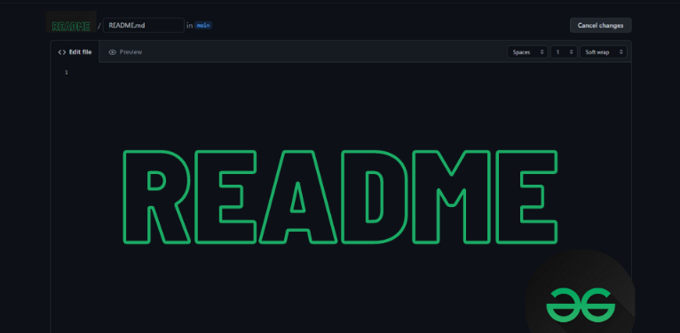
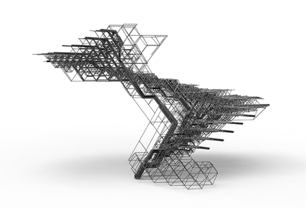
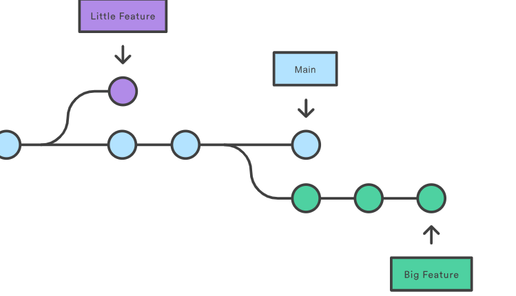

What is the purpose of a README file
The readme file is used to explain what is uploaded and how we can install or use it. It even allows the uploader to add images and videos to help the reader navigate through the project.
This is the default, provided code and no changes have been made yet.

The readme file is used to explain what is uploaded and how we can install or use it. It even allows the uploader to add images and videos to help the reader navigate through the project.

Wireframes give you clarity about how your project will look, it help you in visualizing the layout and functionality.

a branch is like a separate workspace where you can make changes and try new ideas without affecting the main project.